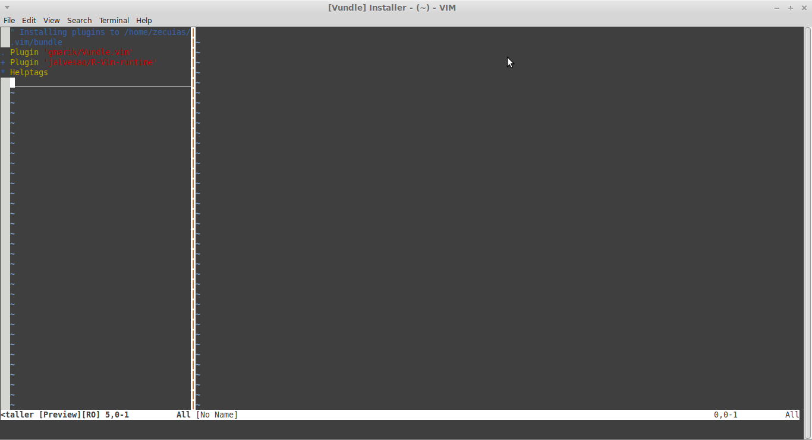
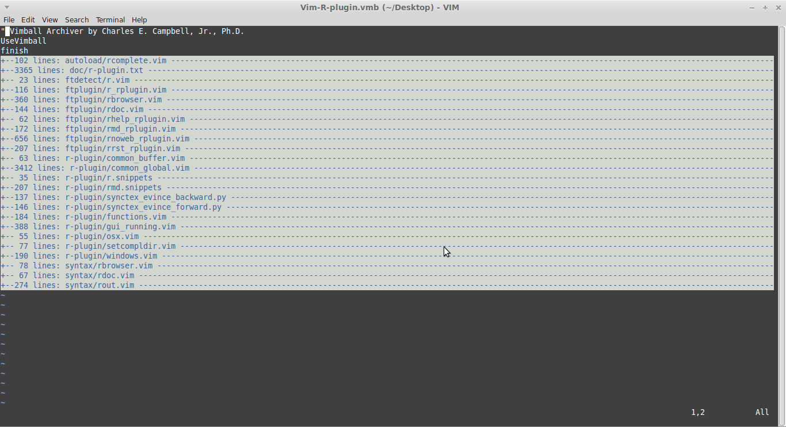

Quando comecei a aprender R (nos idos tempos de 2010), ainda usava Windows, e, até por indicação do professor da disciplina que eu estava cursando, acabei ficando com a interface gráfica para R no Windows. Disciplina cursada sem problemas, fiquei algum (bom) tempo sem mexer. Apesar de ter gostado, ainda não tinha noção do poder do R!!!
Quando precisei utilizar de novo, me lembrei que alguém na disciplina havia comentado sobre RStudio. Resolvi testar.
Descobri muitas vantagens, como auto completar funções e objetos, destaque de sintaxe, identação. Mais tarde descobri como utilizar RMardown e o pacote Knitr para gerar relatórios.
Estava (e ainda estou) muito satisfeito com o RStudio - a equipe de desenvolvimento não para de criar novas funcionalidades.
Pode ser utilizado por usuários desde o nível básico (inclusive é a IDE recomendada no curso básico que desenvolvi para a ANΦVA) até o avançado.
Mas senti que estava na hora de avançar um pouco mais. No livro “The Pragmatic Programmer”, os autores recomendam que um bom programador domine muito bem pelo menos um editor de texto. Levei essa ideia a sério, especialmente porque estou começando a me aprofundar em Python, e gostaria de ter uma única ferramenta para trabalhar em várias linguagens, como R, Python e Latex. Quando precisava fazer algo em Python e Latex, utilizava o Pluma (gedit), o que não era muito eficiente. A tarefa que mais demorava e me angustiava era acertar a identação - na verdade eu acabava desistindo e me conformando com identação errada…
Tentei o rgedit, plugin para utilizar o R no gedit, mas não resolveria e não resolveu o meu problema com outras linguagens.
Pesquisando internet afora, pude perceber que havia duas opções indicadas por bons programadores: Emacs e Vi(m).
Já havia tentado o Emacs (mais de uma vez), sem sucesso. Achei meio confuso cheio de comandos M-x que não faziam sentido para mim.
Decidi encarar o Vim, mesmo sabendo que a curva de aprendizado, quando comparada à de outros editores de texto, é assim:
Atenção: Isso é apenas uma brincadeira. Se você ainda receia usar o Vim por considerá-lo difícil, leia esse artigo.
Brincadeiras à parte, não é que gostei? Fiz o tutorial que vem no editor e estou me acostumando com os comandos. Esse post está sendo escrito utilizando Vim ;) A próxima parte seria entender como usar o R com Vim. Compartilho com você a aventura de instalar o Vim-R-plugin, aventura um tanto quanto selvagem, mas que no final valeu a pena. Não posso deixar de destacar que o Vim-R-plugin foi desenvolvido e é mantido por um brasileiro!!! A Jakson Alves de Aquino, meu reconhecimento e agradecimento.
Importante: estou utilizando Linux Mint 17, vim 7.4 e Vim-R-plugin 1.2.6. Se você usa outra distribuição Linux esses passos talvez não funcionem, e se você usa outro sistema operacional, informe-se na página de documentação do plugin.
Mãos à obra
Instalando pré-requisitos
Instalação do Vim
sudo apt-get install vim
Checar se Vim tem instalado os features +libcall, +clientserver e +conceal. No terminal:
vim
E depois que o Vim abrir:
:version
No meu caso faltava o +clientserver. Para resolver o problema bastou instalar o pacote vim-gnome:
sudo apt-get install vim-gnome
Instalação e configuração do R
Se você ainda não o fez, instale o R R (versão 3.0.0 ou superior)
Instalar o pacote vimcom no R a partir do código fonte. Para isso antes é necessário antes instalar o X11 headers:
sudo apt-get install libx11-dev
Depois, no R, basta utilizar o código abaixo para instalar o pacote vimcom
download.file("http://www.lepem.ufc.br/jaa/vimr/vimcom_1.2-6.tar.gz",
destfile = "vimcom_1.2-6.tar.gz")
install.packages("vimcom_1.2-6.tar.gz", type = "source",
repos = NULL)
O arquivo .Rprofile é um arquivo de configuração que guarda suas opções e pacotes a serem carregados ao se iniciar o R. Colocar no arquivo .Rprofile:
if(interactive()){
options(vimcom.verbose = 1) # opcional
library(vimcom)
}
Instalação do tmux:
O tmux (terminal multiplexer) permite a utilização do editor de texto e do R na mesma janela do terminal.
sudo apt-get install tmux
Instalar wmctrl:
sudo apt-get install wmctrl
Colocar no arquivo .bashrc:
alias vimr="vim --servername VIM"
*Observação: a documentação sugere usar o alias vim. Escolhi vimr porque vou utilizá-lo para abrir arquivos .R. Começar nova sessão shell para o alias funcionar.
Colocar no .vimrc. Caso você não esteja acostumado com o vim, o arquivo .vimrc é um arquivo colocado no seu diretório Home que contem suas configurações do vim.
set nocompatible
syntax enable
filetype plugin on
filetype indent on
Baixar a última versão do plugin em
http://www.vim.org/scripts/script.php?script_id=2628
No diretório em que o plugin baixado está, execute no terminal:
vim Vim-R-plugin.vmb
Depois que uma tela como essa aparecer:

Digite
:so %
e aperte enter quantas vezes for necessário até o fim da instalação. Quando uma tela como essa aparecer:

saia do vim digitando :q.
Parabéns! Você concluiu a instalação do Vim-R-Plugin. Agora veja abaixo como iniciar uma sessão do vim com R.
Para entrar execute no terminal:
tmux
vimr novoArquivo.R
Aparecerá tela normal do Vim. Para sessão interativa do R: :::vim \rf
Você deverá ver a tela abaixo:
Instalação de opcionais do Vim-R-Plugin
Alguns plugins e pacotes adicionais podem melhorar a visualização do código no terminal.
colorout
O output no terminal não oferece destaque de sintaxe. Você pode adicionar cor ao output utilizando o pacote colorout.
no R:
download.file("http://www.lepem.ufc.br/jaa/vimr/colorout_1.1-1.tar.gz",
destfile = "colorout_1.1-1.tar.gz")
install.packages("colorout_1.1-1.tar.gz", type = "source", repos = NULL)
Não se esqueça de colocar library(colorout) no .Rprofile, dentro das chaves do if(interactive()) que foi colocado anteriormente.
setwidth
Ajusta automaticamente a largura da sessão do R no terminal de acordo com o tamanho da janela. É um pacote que pode ser instalado do CRAN:
install.packages("setwidth").
Adicione ao arquivo .Rprofile o comando library(colorout), dentro das chaves do if(interactive()).
ncurses-term
Suporte para 256 cores no emulador de terminal - ncurses-term. No terminal:
sudo apt-get install ncurses-term
latexmk
Automatiza a compilação de documentos LaTeX para produção de relatórios utilizando Sweave() ou knitr().
Assim você está pronto para utilizar o R com o poder do Vim! Em um próximo post mostrarei como uso o Vim-R-Plugin. Caso queira mais informações, não deixe de checar a documentação.